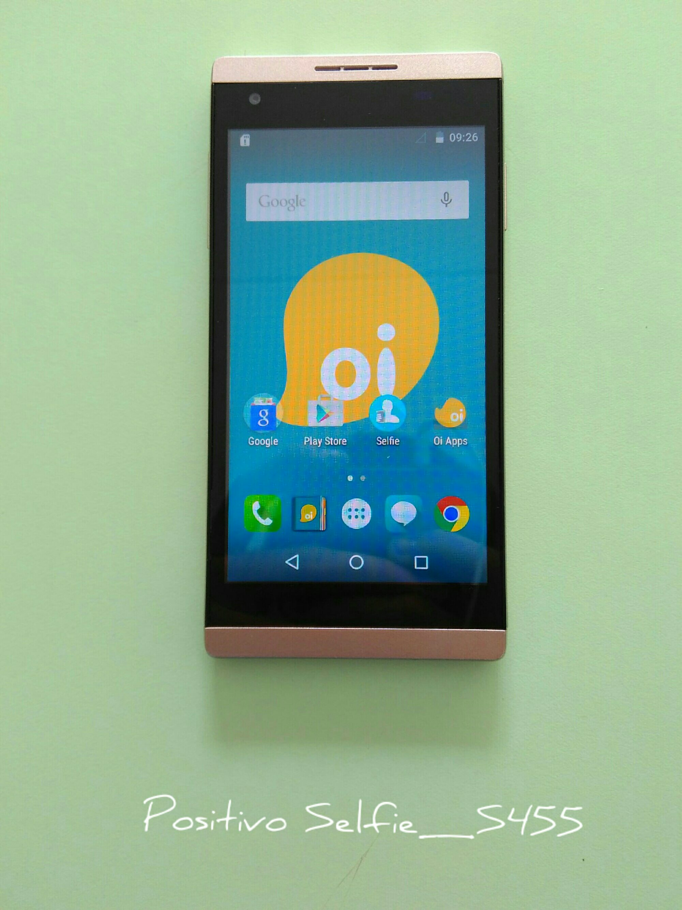

SO. IN ROMS
INICIO
FIRMWARES
OUTROS
SOBRE
CONTATO
Pra que quebrar cabeça se o Hard reset Positivo está aqui
Outros
|
Hard_reset
|
POSITIVO
Para agilizar pressione a tecla
F3
e ensira o modelo.
VOLTAR
Hard Reset Positivo Selfie S455

Remoção do bloqueio de tela do Positivo Selfie
Hard Reset para o Positivo ONE S420
Remoção do bloqueio de tela do Positivo ONE S420